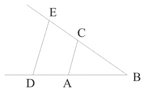

Supplement to Analysis
Early Modern Conceptions of Analysis
- 1. Introduction to Supplement
- 2. Descartes and Analytic Geometry
- 3. British Empiricism
- 4. Leibniz
- 5. Kant
1. Introduction to Supplement
This supplement sketches how a reductive form of analysis emerged in Descartes’s development of analytic geometry, and elaborates on the way in which decompositional conceptions of analysis came to the fore in the early modern period, as outlined in §4 of the main document.
2. Descartes and Analytic Geometry
In a famous passage in his replies to Mersenne’s objections to the Meditations, in discussing the distinction between analysis and synthesis, Descartes remarks that “it is analysis which is the best and truest method of instruction, and it was this method alone which I employed in my Meditations” (PW, II, 111 [Full Quotation]). According to Descartes, it is analysis rather than synthesis that is of the greater value, since it shows “how the thing in question was discovered”, and he accuses the ancient geometers of keeping the techniques of analysis to themselves “like a sacred mystery” (ibid.; cf. PW, I, 17 [Quotation]). Euclid’s Elements is indeed set out in ‘synthetic’ form, but it is unfair to suggest that someone who worked through the text would not gain practice in analysis, although admittedly there are no rules of analysis explicitly articulated.
However, it was Descartes’s own development of ‘analytic’ geometry—as opposed to what, correspondingly, then became known as the ‘synthetic’ geometry of Euclid—that made him aware of the importance of analysis, and which opened up a whole new dimension to analytic methodology. Significantly, Descartes’s Geometry was first published together with the Discourse and advertised as an essay in the method laid out in the Discourse. The Geometry opens boldly: “Any problem in geometry can easily be reduced to such terms that a knowledge of the lengths of certain straight lines is sufficient for its construction.” (G, 2.) Descartes goes on to show how the arithmetical operations of addition, subtraction, multiplication, division and the extraction of roots can be represented geometrically. For example, multiplication of two lines BD and BC can be carried out by joining them as in the diagram below by AC, with AB taken as the unit length. If DE is then drawn parallel to AC, BE is the required result. (Since the ratio of BD to BE is the same as the ratio of AB to BC, the two triangles BDE and BAC being similar, BD × BC = AB × BE = BE, if AB is the unit length.)

Problems can indeed then be broken down into simpler problems involving the construction of individual straight lines, encouraging the decompositional conception of analysis. But what is of greatest importance in Descartes’s Geometry is the use made of algebra. Although the invention of algebra too can be traced back to the ancient Greeks, most notably, Diophantus, who had introduced numerical variables (‘x’, ‘x²’, etc.), it was only in the 16th century that algebra finally established itself. Vieta, in a work of 1591, added schematic letters to numerical variables, so that quadratic equations, for example, could then be represented (in the form ‘ax² + bx + c = 0’), yielding results of greater generality. Algebra was specifically called an ‘art of analysis’, and it was in the work of Descartes (as well as Fermat) that its enormous potential was realised. It did indeed prove a powerful tool of analysis, enabling complex geometrical figures to be represented algebraically, allowing the resources of algebra and arithmetic to be employed in solving the transformed geometrical problems.
The philosophical significance was no less momentous. For in reducing geometrical problems to arithmetical and algebraic problems, the need to appeal to geometrical ‘intuition’ was removed. Indeed, as Descartes himself makes clear in ‘Rule Sixteen’, representing everything algebraically—abstracting from specific numerical magnitudes as well as from geometrical figures—allows us to appreciate just what is essential (PW, I, 66-9.) The aim is not just to solve a problem, or to come out with the right answer, but to gain an insight into how the problem is solved, or why it is the right answer. What algebraic representation reveals is the structure of the solution in its appropriate generality. (Cf. Gaukroger 1989, ch. 3.) Of course, ‘intuition’ is still required, according to Descartes, to attain the ‘clear and distinct’ ideas of the fundamental truths and relations that lie at the base of what we are doing, but this was not seen as something that we could just appeal to without rigorous training in the whole Cartesian method.
The further application of algebraic techniques, in the context of the development of function theory, was to lead to the creation by Leibniz and Newton of the differential and integral calculus—which, in mathematics, came to be called ‘analysis’. In turn, it was the project of rigorizing the calculus in the nineteenth century that played a key role in the work of Frege and Russell, in which function theory was extended to logic itself and ‘analytic’ philosophy was founded (see §6 of the main document).
3. British Empiricism
The decompositional conception of analysis, as applied to ideas or concepts, was particularly characteristic of British empiricism. As Locke put it, “all our complex Ideas are ultimately resolvable into simple Ideas, of which they are compounded, and originally made up, though perhaps their immediate Ingredients, as I may so say, are also complex Ideas” (Essay, II, xxii, 9 [Full Quotation]). The aim was then to provide an account of these ideas, explaining how they arise, showing what simpler ideas make up our complex ideas (e.g., of substance) and distinguishing the various mental operations performed on them in generating what knowledge and beliefs we have. Locke only uses the term ‘Analysis’, however, once in the entire Essay (shortly after the remark just quoted). Perhaps he was conscious of its meaning in ancient Greek geometry, making him hesitant to use it more widely, but it is still significant that when he does, he does so in precisely the sense of ‘decomposition’ [Quotation]. Locke tends to talk, though, of ‘combining’ or ‘composing’ rather than ‘synthesizing’ complex ideas from simpler ideas, and of ‘separating’ or ‘resolving’ rather than ‘analyzing’ them into simpler ideas. But in the period following Locke, ‘analysis’ came to be used more and more for the process of ‘resolving’ complexes into their constituents.
4. Leibniz
Leibniz occupies a pivotal point in the history of conceptions of analysis. Well versed in both classical and modern thought, at the forefront of both mathematics and philosophy, he provided a grand synthesis of existing conceptions of analysis and at the same time paved the way for the dominance of the decompositional conception. The key to all of this is what can be called his containment principle. In a letter to Arnauld, he writes: “in every affirmative true proposition, necessary or contingent, universal or singular, the notion of the predicate is contained in some way in that of the subject, praedicatum inest subjecto. Or else I do not know what truth is.” (PW, 62; cf. PT, 87-8 [Quotation].) If this containment of the predicate in the subject could then be made explicit, according to Leibniz, a proof of the proposition could thereby be achieved. Proof thus proceeds by analyzing the subject, the aim being to reduce the proposition to what Leibniz calls an ‘identity’—by successive applications of the rule of ‘substitution of equivalents’, utilizing an appropriate definition. A proposition expresses an identity, in Leibniz’s terminology, if the predicate is explicitly either identical with or included in the subject (cf. PT, 87-8 [Quotation]). The following proof of ‘4 = 2 + 2’ illustrates the procedure (cf. Leibniz NE, IV, vii, 10):
(a) 4 = 2 + 2 (b) 3 + 1 = 2 + 2 (by the definition ‘4 = 3 + 1’) (c) (2 + 1) + 1 = 2 + 2 (by the definition ‘3 = 2 + 1’) (d) 2 + (1 + 1) = 2 + 2 (by associativity) (e) 2 + 2 = 2 + 2 (by the definition ‘2 = 1 + 1’)
The final line of the proof is an ‘identity’ in Leibniz’s sense, and the important point about an identity is that it is ‘self-evident’ or ‘known through itself’, i.e., can be simply ‘seen’ to be true (cf. Leibniz PW, 15; LP, 62). It would be tempting to talk here of identities being ‘intuited’ as true, but Leibniz tends to use the word ‘intuition’ for the immediate grasp of the content of a concept (cf. MKTI, 23-7), whereas the point about knowing the truth of identities is that we can do so without grasping the content of any of the terms. To the extent that we can still judge that such a proposition is true, our knowledge is what Leibniz calls ‘blind’ or ‘symbolic’ rather than ‘intuitive’ (ibid., 25).
Indeed, it was precisely because proofs could be carried out without appeal to intuition that Leibniz was so attracted to the symbolic method. As he remarked in the New Essays, the great value of algebra, or the generalized algebra that he called the ‘art of symbols’, lay in the way it ‘unburdens the imagination’ (NE, 488). If proofs could be generated purely mechanically, then they were freed from the vagaries of our own mental processes (cf. NE, 75, 412). For Leibniz, the status of a proposition—its truth or falsity, necessity or contingency—was dependent not on its mode of apprehension (as it was for Descartes and Locke), which could vary from person to person, but on its method of proof, which was an objectively determinable matter.
Leibniz’s conception of analysis can thus be seen as combining aspects of Plato’s method of division, in the centrality accorded to the definition of concepts, of ancient Greek geometry and Aristotelian logic, in the emphasis placed on proof and working back to first principles, and of Cartesian geometry and the new algebra, in the value attributed to symbolic formulations. Furthermore, we can see how, on Leibniz’s view, analysis and synthesis are strictly complementary (cf. USA, 16-17 [Quotation]). For since we are concerned only with identities, all steps are reversible. As long as the right notation and appropriate definitions and principles are provided, one can move with equal facility in either an ‘analytic’ or a ‘synthetic’ direction, i.e., in the example above, either from (a) to (e) or from (e) to (a). If a characteristica universalis or ideal logical language could thus be created, we would have a system that could function not only as an international language and scientific notation but also as a calculus ratiocinator that provided both a logic of proof and a logic of discovery. Leibniz’s vision may have been absurdly ambitious, but the ideal was to influence many subsequent philosophers, most notably, Frege and Russell.
5. Kant
The decompositional conception of analysis, as applied to concepts, reached its high-point in the work of Kant, although it has continued to have an influence ever since, most notably, in Russell’s and Moore’s early philosophies (see §3 and §4 of the supplementary document on Conceptions of Analysis in Analytic Philosophy). As his pre-critical writings show, Kant simply takes over the Leibnizian conception of analysis, and even though, in his critical period, he comes to reject the Leibnizian view that all truths are, in Leibniz’s sense, ‘analytic’, he retains the underlying conception of analysis. He simply recognizes a further class of ‘synthetic’ truths, and within this, a subclass of ‘synthetic a priori’ truths, which it is the main task of the Critique of Pure Reason to elucidate.
As the ‘Introduction’ to the Critique shows (A6-7/B10-11), the decompositional conception of analysis lies at the base of Kant’s distinction between analytic and synthetic judgements. We can formulate Kant’s ‘official’ criterion for analyticity as follows:
(ANO) A true judgement of the form ‘A is B’ is analytic if and only if the predicate B is contained in the subject A.
The problem with this criterion, though, or at least, with the way that Kant glosses it, is obvious. For who is the judge of whether a predicate is or is not ‘contained’—however ‘covertly’—in the subject? According to Leibniz, for example, all truths, even contingent ones, are ‘analytic’: it is just that, in the case of a contingent truth, only God can know what is ‘covertly contained’ in the subject, i.e., know its analysis. Kant’s talk of the connection between subject and predicate in analytic judgements being ‘thought through identity’, however, suggests a more objective criterion—a logical rather than phenomenological one. This is made more explicit later on in the Critique, when Kant specifies the principle of contradiction as ‘the highest principle of all analytic judgements’ (A150-1/B189-91). The alternative criterion can be formulated thus:
(ANL) A true judgement of the form ‘A is B’ is analytic if and only if its negation ‘A is not B’ is self-contradictory.
However, in anything other than trivial cases (such as Leibnizian ‘identities’), it will still require ‘analysis’ to show that ‘A is not B’ is self-contradictory, and for any given step of ‘analysis’, it seems that we would still have to rely on what is ‘thought’ in the relevant concept. So it is not clear that (ANL) is an improvement within Kant’s system.
Whatever criterion we might offer to capture Kant’s notion of analyticity, the fundamental point of contrast between ‘analytic’ and ‘synthetic’ judgements, rooted in the decompositional conception of analysis, lies in the former merely ‘clarifying’ and the latter ‘extending’ our knowledge. It was for this reason that Kant regarded mathematical propositions as synthetic, since he was convinced—rightly—that mathematics advances our knowledge. This is made clear in chapter 1 of the ‘Transcendental Doctrine of Method’ (CPR, A716-7/B744-5), where Kant argues that no amount of ‘analysis’ of the concept of a triangle will enable a philosopher to show that the sum of the angles of a triangle equals two right angles [Quotation]. It takes a geometer to demonstrate this, by actually constructing the triangle and drawing appropriate auxiliary lines (as Euclid does in I, 32 of the Elements). Kant writes that “To construct a concept means to exhibit a priori the intuition corresponding to it” (A713/B741); and such ‘intuition’ is also needed in constructing the auxiliary lines. According to Kant, then, the whole process is one of synthesis. But the two activities mentioned here are both part of what the ancient geometers called analysis (see §2 of the supplementary document on Ancient Conceptions of Analysis). What is remarkable about Kant’s conception is the way that it has inverted the original conception of analysis in ancient Greek geometry—or at least collapsed together into ‘synthesis’ what had previously been distinguished. ‘Analysis’ is left with such a small role to play that it is not surprising that it is condemned as useless.